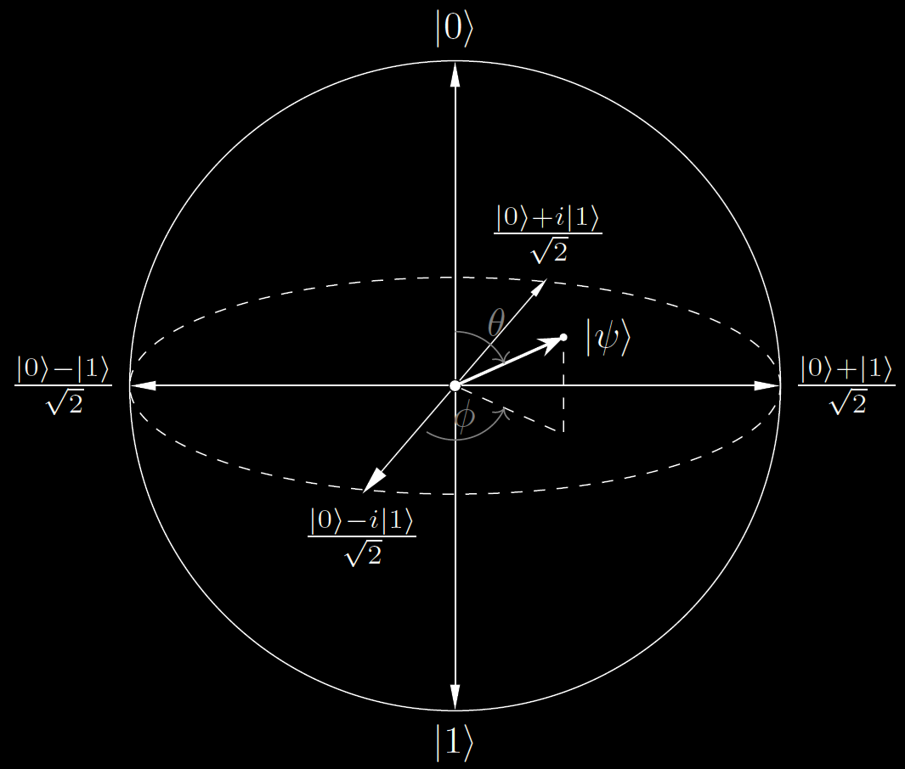
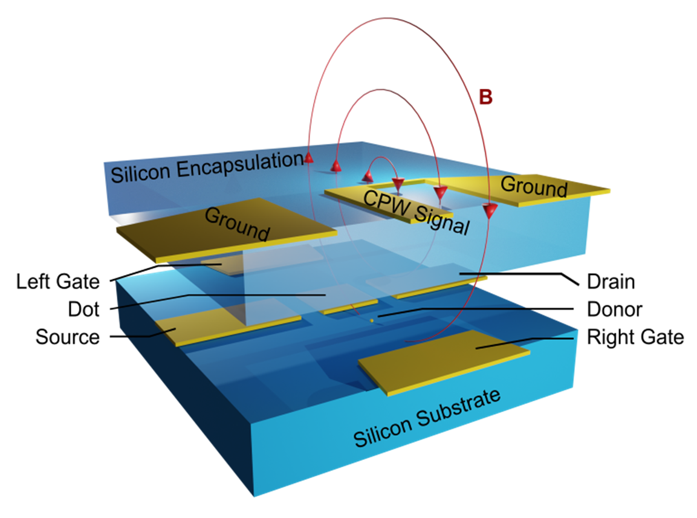
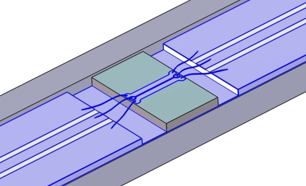
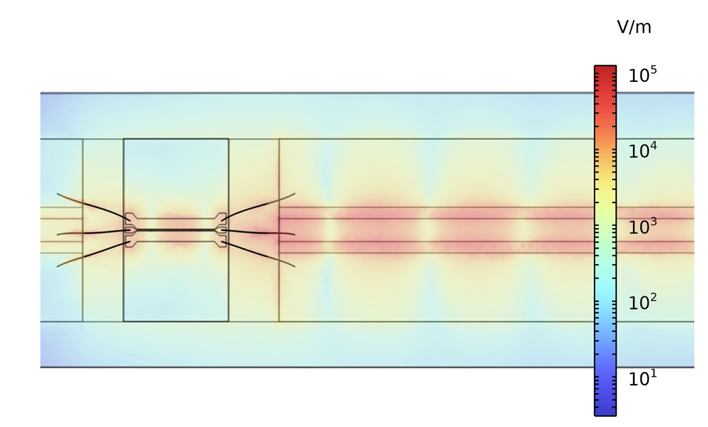
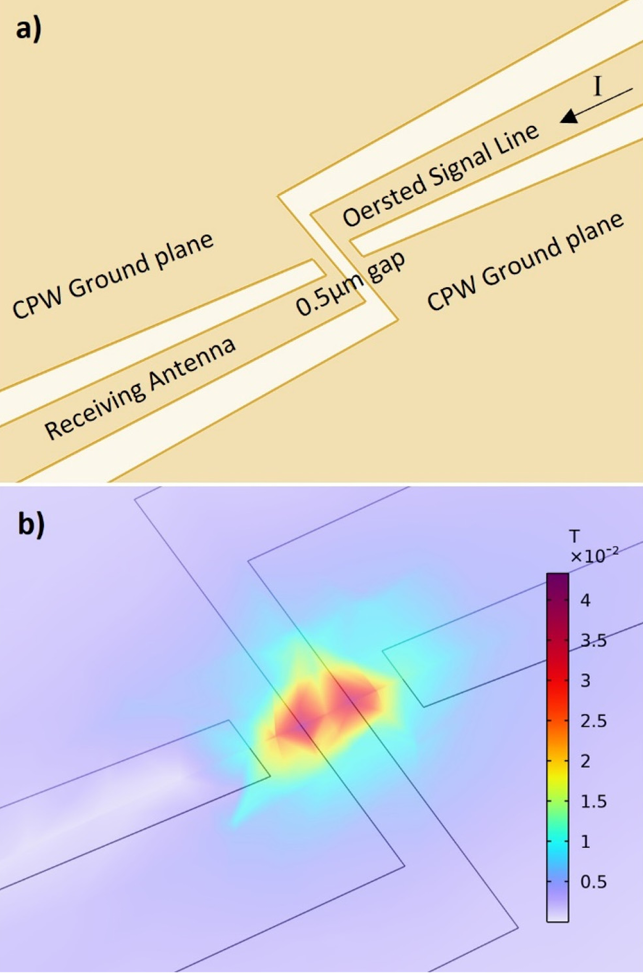
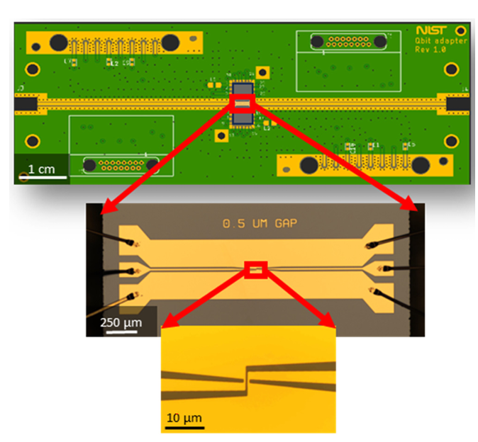
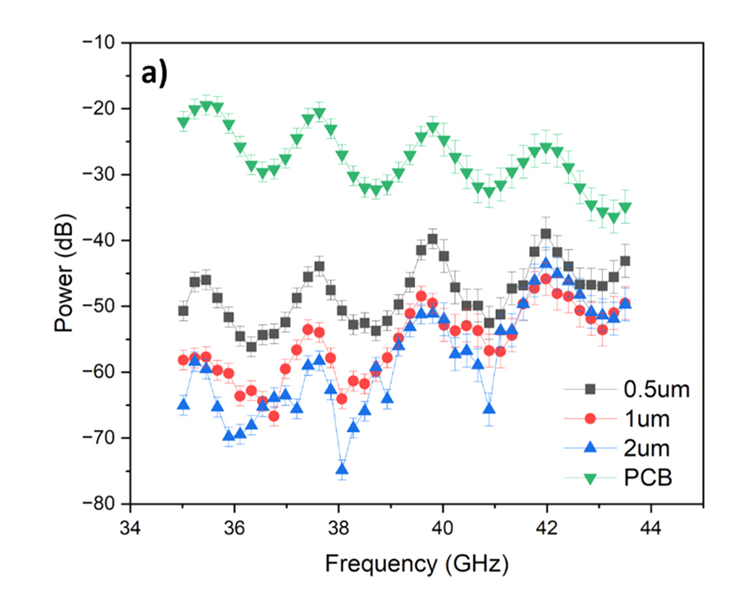
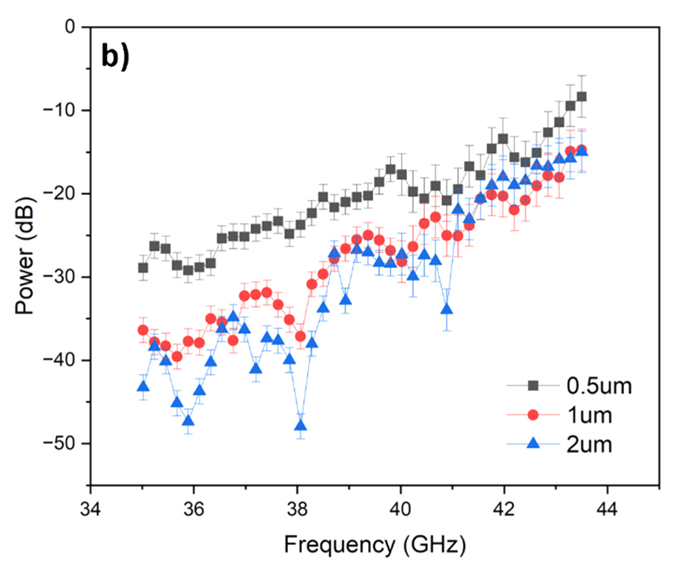

High-Frequency Oersted Lines for Electron Spin Manipulation in Silicon Quantum Devices
Published in Journal of Vacuum Science & Technology (JVST) B · Special Collection: EIPBN
Understanding Qubits, Spin, and Zeeman Splitting
If you are new to quantum computing, here is the core intuition behind this research. While classical computers store information as bits that are strictly 0 or 1, quantum computers use qubits (quantum bits) that can exist in superpositions:
The Two-Level System
An electron spin acts like a tiny bar magnet that can point "up" (spin-up, state \( |0\rangle \)) or "down" (spin-down, state \( |1\rangle \)). In free space, these two states have the exact same energy, making them degenerate and impossible to selectively manipulate.
Zeeman Splitting
When we apply a static external magnetic field \( B_{\text{ext}} \approx 1.5\text{ T} \), it lifts this degeneracy by splitting the energy levels according to the Zeeman Hamiltonian:

Figure 1: Geometric representation of a single electron spin qubit on the Bloch Sphere. The state vector \( |\psi\rangle \) is navigated using oscillating microwave pulses.
Once the energy levels are split, we can selectively flip the electron spin between 0 and 1 by broadcasting a precisely tuned microwave pulse at the resonance frequency \( f_0 \approx 40\text{ GHz} \). Delivering these ultra-high-frequency microwave signals directly to microscopic quantum dots without losing power or generating excess thermal noise is the central engineering challenge this project solves!
Project Motivation & Engineering Goals
Coherent manipulation of electron spins is one of the central challenges in scaling silicon-based quantum computing architectures. Operating inside millikelvin dilution refrigerators (\(T < 300\text{ mK}\)), qubits require ultra-clean microwave delivery structures.
This project outlines a rigorous methodology for designing, modeling, fabricating, and testing coplanar waveguides (CPWs) and nanoscale electron spin resonance (ESR) / Oersted lines capable of transmitting high-frequency pulses with minimal insertion loss. Furthermore, we introduced a novel Oersted-antenna design that couples a symmetrical receiving antenna opposite the signal line to monitor electromagnetic field power directly at the device interface.

Figure 2: Three-dimensional conceptual architecture showing the microwave coplanar waveguide and Oersted antenna delivering an oscillating magnetic field (\(B\)) to an encapsulated silicon quantum device.
COMSOL Multiphysics Modeling
To achieve impedance matching (\(Z_0 \approx 50\ \Omega\)) and prevent signal reflections across the test setup, finite element simulations were conducted using COMSOL Multiphysics. The model simulated the full test assembly consisting of:
- A printed circuit board (PCB) fabricated on CLTE-AT Rogers dielectric material with gold-plated copper ground planes.
- Gold wire bonds interfacing the PCB coplanar waveguides to the silicon chip CPW pads.
- Transmission parameters (\(S_{21}\)) and reflection parameters (\(S_{11}\)) evaluated across the 34–46 GHz frequency span.
Simulations successfully identified standing wave behaviors and cavity resonance ripples spaced by \(\Delta f \approx 2\text{ GHz}\), corresponding to a cavity length of \(L \approx 4.3\text{ cm}\) matching the distance from the PCB SMP connectors to the wire-bonded chip edge.

Figure 3a: 3D CAD and COMSOL geometry layout showing coplanar waveguides and wire-bonded chip assembly.

Figure 3b: Electric field distribution and magnitude map (\(V/m\)) simulated across the transmission line structure.

Figure 3c: (a) Detailed layout of the 0.5 µm gap Oersted signal line and receiving antenna. (b) Finite-element COMSOL simulation of the induced oscillating magnetic field distribution (Tesla) across the antenna gap.
Cleanroom Fabrication & Test Infrastructure
Test structures and Oersted-antenna devices were fabricated at the NIST NanoFab using standard photolithography and lift-off techniques:
- Resist Stack: A bilayer resist comprising LOR 3A and S1813 was spun on undoped silicon wafers to ensure clean lift-off profiles.
- Patterning: Exposure via a direct laser writer at a dose of \(90\text{ mJ/cm}^2\), followed by development in MF 319 and oxygen plasma descum.
- Metallization: E-beam evaporation of a 5 nm titanium adhesion layer followed by 150 nm of gold at an angle to prevent conformal sidewall coating.
- Lift-Off: Immersion in Remover PG at 80 °C, rinsed in isopropyl alcohol and de-ionized water.
The Oersted-antenna devices featured variable center gap spacings ranging from 0.5 µm to 2.0 µm. The 0.5 µm gap represented the minimum reliable feature size achievable via optical photolithography.

Figure 4: Packaged PCB carrier board, optical micrograph of silicon chip wire-bond interconnects, and zoomed-in view of the 0.5 µm gap Oersted antenna.
S-Parameter Results & RF Analysis
In high-frequency RF engineering, performance is evaluated using scattering parameters:
Measures how much microwave power bounces back from the input port. A deep dip in \(S_{11}\) (below -15 dB) indicates excellent impedance matching where almost all energy enters the device without reflecting.
Measures how much power successfully travels through the transmission line to the output or qubit antenna. High \(S_{21}\) values signify low insertion loss across the 40 GHz operational window.

Figure 5a: Unnormalized measured transmission power (dB) across frequency for 0.5 µm, 1 µm, and 2 µm gap structures alongside PCB reference lines.

Figure 5b: Normalized transmission power (dB) highlighting direct gap-dependent coupling efficiency from 34 to 44 GHz.
Key Results & Findings
Correlation of Simulations and Measured Transmittance
A major finding of this work is the successful correlation between electromagnetic finite-element magnetic field simulations and fabricated/measured transmittance values across the oersted-antenna line, providing robust experimental validation.
Optimized Design & Placement for Spin Control
We established a reliable methodology to optimize the design and physical placement of the ESR antenna relative to our qubit structure, maximizing local oscillating magnetic fields to drive high-fidelity spin manipulations.
Next Steps: ESR Spectra & Spin Qubit Control
Building upon these modeled and validated high-frequency Oersted lines, the next major milestone is to integrate these structures with silicon quantum dot devices operating inside millikelvin dilution refrigerators.
By coupling the microwave delivery lines directly to single-donor qubits, the immediate next steps involve measuring full electron spin resonance (ESR) spectra and demonstrating coherent, addressable manipulation and control of individual spin qubits. This advances the architecture toward scalable, fault-tolerant silicon quantum processors.
Project Credits & Authorship
Authors: Mark-Yves Gaunin (Lead Data Curation, Software, Writing), Pradeep Namboodiri, Alessandro Restelli, Ranjit Kashid, Xiqiao Wang, Fan Fei, Brian Courts, Utsav, Vijith Kamalon Pulikodan, Jonathan Wyrick, and Richard Silver.
Affiliations: National Institute of Standards and Technology (NIST) Physical Measurement Laboratory; Joint Quantum Institute (JQI) & Department of Electrical and Computer Engineering, University of Maryland (UMD); C-MET India; Rigetti Computing.